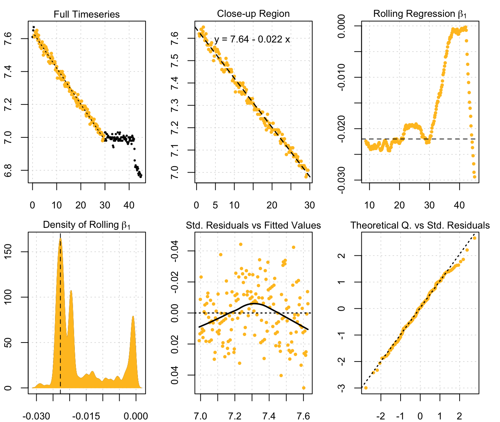

Automatic detection of respirometry parameters
Introduction
In respirometry, we often want to report oxygen uptake rates that represent experimentally important stages or physiological states. These include:
- minimum rates observed, often most representative of resting or maintenance metabolism;
- maximum rates observed, representative of active or maximal metabolic rates; and
- the most consistent rates observed, often most representative of standard metabolic rates.
Here were present auto_rate(), a function in the respR package that uses rolling regression techniques to automatically estimate the estimate the most linear rates over a specific sampling window. In addition, it identifies maximum, minimum, and interval rates. When used to detect linear sections of the data, a kernel density estimate is performed on the rolling regression output and the kernel bandwidth used to re-sample linear regions of the data for re-analysis.
x <- urchins.rd[,c(1,15)]
auto_rate(x)
#> 10 kernel density peaks detected and ranked.
The diagram below illustrates the main processes involved in producing the different outputs of the function:
Rolling linear regression
The function auto_rate() uses a novel method of combining rolling regression and kernel density estimate algorithms to detect patterns in respirometry data. First, auto_rate() always performs a rolling linear regression on the data before additional methods are applied. The rolling regression runs all possible ordinary least-squares (OLS) linear regressions \((y = \beta_0 + \beta_1 X + \epsilon)\) of a fixed sample width across the entire data series, and is expressed as: \[y_t(n) = X_t(n) \beta (n) + \epsilon_t(n), \ t = n,\ ...,\ T\] where \(n\) is the window of width \(n < T\), \(T\) is the total length of the dataset, \(y_t(n)\) is the vector of observations (e.g. oxygen concentration), \(X_t(n)\) is the matrix of explanatory variables, \(\beta (n)\) is a vector of regression parameters and \(\epsilon_t(n)\) is a vector of error terms. Thus, a total of \((T - n) + 1\) number of overlapping regressions are fitted, which are then ranked to obtain maximum and minimum values. If an interval-based regression is required, we select the "interval" method when calling the function, and it automatically selects non-overlapping sections of the data for regressions.
Kernel density estimation
Additional analytical techniques are automatically applied when we use auto_rate() to detect linear sections of the data. First, we take advantage of the key assumption that linear sections of a data series are reflected by stable parameters across the rolling estimates, a property that is often applied in financial statistics to evaluate model stability and make forward predictions on time-series data (see Zivot and Wang 2006). We use kernel density estimation (KDE) techniques, often applied in various inference procedures such as machine learning, pattern recognition and computer vision, to automatically aggregate stable (i.e. linear) segments as they naturally form one or more local maximums (“modes”) in the probability density estimate.
KDE requires no assumption that the data is from a parametric family, and learns the shape of the density automatically without supervision. KDE can be expressed as: \[\hat{f}(x) = \frac{1}{nh^d}\sum_{i = 1}^{n} K \left(\frac{x - X_i}{h} \right)\] where \(f\) is the density function from an unknown distribution \(P\) for \(X_1,...,X_n\), \(K\) is the kernel function and \(h\) is the optimal smoothing bandwidth. The smoothing bandwidth is computed using the solve-the-equation plug-in method (Sheather et al. 1996, Sheather and Jones 1991) which works well with multimodal or non-normal densities (Raykar and Duraiswami 2006).
We then use \(h\) to select all values in the rolling regression output that match the range of values around each mode (\(\theta_n\)) of the KDE (i.e. \(\theta_n \pm h\)). These rolling estimates are grouped and the upper and lower bounds of the data windows they represent are used to re-select the linear segment of the original data series. The rolling estimates are discarded, while the newly detected data segments are analysed using linear regression.
Adjusting the width of rolling regressions
By default, auto_rate()’s rolling regression uses a rolling window value of 0.2 multiplied by the total length of the number of samples, or total time elapsed. This can be changed by changing the width argument, to a proportion relative to the total size of the data (width = 0.1) or a fixed number (width = 3000).
It is important to note that the width determines the exact width of the data segments produced for max, min and interval rates. This allows the user to consitently report results across experiments, such as reporting the maximum or minimum rates sustained over a specified time period.
Importantly, the width does not restrict the maximum width of the segments produced for linear detection. We advise users to use caution when changing the width argument if using method = "linear". Choosing an inappropriate width value tends to over-fit the data for rolling regression.
Below, we show the differences in the shape of the rolling regressions when using a width of 0.6 to analyse sardine.rd:
# Perform linear detection; default width (when not specified) is 0.2:
normx <- auto_rate(sardine.rd, plot = FALSE)
#> 46 kernel density peaks detected and ranked.
# Perform linear detection using manual width of 0.6:
overx <- auto_rate(sardine.rd, plot = FALSE, width = .6)
#> 19 kernel density peaks detected and ranked.
# Plot ONLY the rolling regression plots for comparison:
par(mfrow = c(1, 2), mai = c(0.4, 0.4, 0.3, 0.3), ps = 10,
cex = 1, cex.main = 1)
plot(normx, choose = 3)
plot(overx, choose = 3)
Under perfectly linear conditions, we would expect the rolling regression output to produce a straight, horizontal line with a slope of 0, i.e. a very stable plot. Since KDE automatically aggregates stable values, a poor selection of the width value may result in a badly-characterised rolling estimate output. In the example presented above, while the default width showed a pattern of relative stability after 3,000 seconds, that information was lost when a width of 0.6 was used. Thus, the KDE technique would not have had the appropriate information necessary to correctly detect any linear patterns in the same data.
Examples
Examples are available in the reference section. You may also run ?auto_rate in the R console to access some examples in the help file.
References
Jones, M. C., Marron, J. S., & Sheather, S. J. (1996). A Brief Survey of Bandwidth Selection for Density Estimation. Journal of the American Statistical Association, 91(433), 401–407. doi:10.1080/01621459.1996.10476701
Olito, C., White, C. R., Marshall, D. J., & Barneche, D. R. (2017). Estimating monotonic rates from biological data using local linear regression. The Journal of Experimental Biology, jeb.148775-jeb.148775. doi:10.1242/jeb.148775
Raykar, V., & Duraiswami, R. (2006). Fast optimal bandwidth selection for kernel density estimation. In Proceedings of the Sixth SIAM International Conference on Data Mining (Vol. 2006). doi:10.1137/1.9781611972764.53
Sheather, S. J., & Jones, M. C. (1991). A Reliable Data-Based Bandwidth Selection Method for Kernel Density Estimation. Journal of the Royal Statistical Society. Series B (Methodological), 53(3), 683–690.
Zivot, E., & Wang, J. (2006). Modeling Financial Time Series with S-PLUS (2nd ed.). New York: Springer-Verlag.